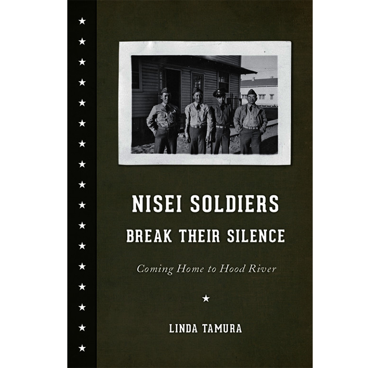

Nisei Soldiers Break Their Silence is a nonfiction book that documents the experiences of Nisei (second-generation Japanese American) soldiers who fought in World War II, and the reception they faced upon returning to their hometown of Hood River, Oregon. The book revolves largely around oral histories that author Linda Tamura gathered herself, given by the soldiers.
The bulk of the book is structured chronologically, starting with Part 1, “Early Years,” which describes Japanese settlement in the Hood River area and the racism that greeted Japanese Americans from the beginning. Part II, “World War II,” dives into the Nisei’s experiences in the military, while being forced to deal with racism both within the military and outside of it. This section also includes the forced removal of Japanese Americans to internment camps. Part III, “After the War,” describes the extreme negative reaction that the white Hood River residents had to the Nisei soldiers and their families returning home. Part IV, “Today,” details the changes that have occurred in Hood River culturally since WWII, while also acknowledging the lingering effects of the racist treatment the Nisei received.
I chose to include Nisei Soldiers Break Their Silence in this guide because of the valuable and extensive perspective it provides on the experience of Japanese Americans in Oregon. This text engages with the Hood River area of Oregon, an area around 60 miles from Portland that became a significant hub for Japanese Americans in the early 1900s; Tamura reports that in 1910, the Hood River area had the largest population of Japanese Oregonians outside of Portland. Japanese Oregonians were instrumental in turning Hood River into a highly productive agricultural zone, working to develop the land despite exclusionary racist laws and community attitudes.
Personally, I did not know much about Japanese influence in Oregon before reading this book. I grew up in Seattle, where we learned about Japanese Washingtonian influence and history, but I had yet to learn about the history of Japanese presence in Oregon. Tamura’s book provided extensive information as to the history of Japanese Americans in Oregon, with a focus on the Hood River region, and spoke to the racism prevalent in the area. This was helpful for me in casting a critical eye on Hood River, a town that I had previously only known as a pretty vacation spot. Thanks to this text, I was able to develop a more substantial understanding of the ways in which bigotry and anti-Japanese sentiment have shaped the community of Hood River, along with building a greater appreciation of the contributions that the Japanese Americans have given to the area and to the country. I would consider this book to be essential reading for one hoping to garner a full sense of Oregon literature and Oregon history, especially for those that hope to gain an understanding of histories beyond those that revolve around white Oregonians. Tamura’s text encourages the reader to consider which narratives of Hood River are “mainstream” and widely accepted, and to subvert this narrative by providing oral histories of the Hood River Nisei.
From my perspective, one of the most memorable sections in Nisei Soldiers Break Their Silence is that which describes the soldiers’ return home and the reception that awaited them. A war memorial in Hood River, which included an honor roll of more than 1,600 members of the armed forces, was defaced by the Legion members that had erected it in the first place. These Legion members painted over the names of the Japanese Americans who were included in the memorial. The vitriol did not stop there; white Hood River residents frequently published hateful statements regarding the town’s Japanese residents in local papers, examples of which are included throughout the text; the Hood River County Sun stated that “‘They [the Hood River Nisei] must never return’” (139), and the Legion post “resolved to prevent those of Japanese ancestry from returning to the valley and deport all Nikkei [Japanese emigrants and their descendants] to Japan” (140). Statistics taken from the town showed that disapproval for the Japanese returning from the internment camps and from war, which stood at 84%, was almost three times stronger than it was for other western states.
This disturbing information provides ample insight into the hate that Hood River’s Japanese population was forced to reckon with, and helps to overturn the prevailing narrative of the Hood River area that I had previously held, a narrative that, I’ve now discovered, is far from accurate. Nisei Soldiers Break Their Silence explicitly explains why there is, and has been, an erasure of Japanese people in Hood River by describing the historical precedent of racism and exclusion in the area, specifically in regards to WWII.
Linda Tamura is a Professor Emerita at Willamette University in Salem, Oregon, according to her website. Along with Nisei Soldiers Break Their Silence, Tamura also wrote Hood River Issei: An Oral History of Japanese Settlers in Oregon’s Hood River Valley in 1993 (discussed below in Further Reading). Tamura’s literary work has largely focused on Japanese presence in Oregon, particularly centering on the Hood River area, where Tamura was born and raised. She is a third generation Japanese American (referred to as a Sansei).
Recently, Tamura co-created an exhibit focused on the exclusionary treatment that Japanese Americans received during the World War II era, titled What If Heroes Were Not Welcome Home? This traveling exhibit was done through the Oregon Historical Society. In 2023, Tamura co-coordinated the dedication of both a historical marker and a highway commemorating Oregon Nisei World War II veterans.
Tamura currently serves on the editorial board of The Oregon Encyclopedia, and is helping to run a traveling exhibit on Nisei Veterans that is currently running.
Linda Tamura, The Hood River Issei: An Oral History of Japanese Settlers in Oregon’s Hood River Valley (1993)
- Explores first-generation Japanese immigrants’ experiences in the Hood River Valley.
William Least Heat-Moon, Blue Highways (1982)
- Includes detailed exploration of the Columbia River Gorge
